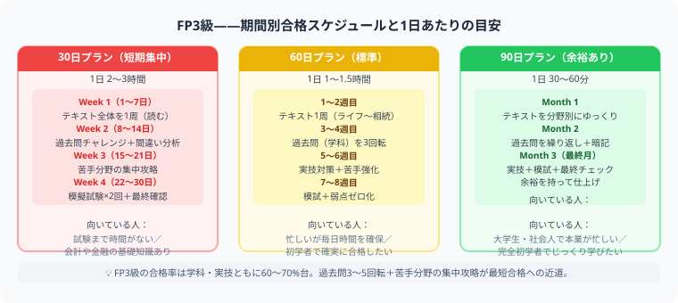

FP3級は何日で受かる？
CBT方式の今、逆算スケジュールの立て方
この記事でわかること（5秒まとめ）
- FP3級は2024年からCBT方式——ペーパー試験は廃止、テストセンターで随時受検できる
- 初学者なら60〜90日、基礎知識がある人なら30日でも合格を狙える
- CBT化で受検日を自分で選べるため、まず受検日を仮決めして逆算するのが最短ルート
- 学科試験は120分→90分に短縮、実技は60分。受検料は合計8,000円
大谷 一輝 より
こんにちは、大谷です！
僕の周りでもFP3級を受ける友人が増えましたが、意外と知られていないのが「もうペーパー試験じゃない」という点です。2024年からCBT方式（コンピューターでの受検）に完全移行していて、決まった日に会場へ行く必要がなくなりました。これは学習計画の立て方そのものを変えるくらい大きい変化です。
今日は「何日で受かるか」を、CBTならではの逆算の仕方も含めて整理します！
また、記事の末尾のほうにある【いいねボタン】をポチッと押してもらえると、めちゃくちゃ嬉しいです！
受験生
FP3級って年に3回しか試験がないんですよね？次の試験まで日数が中途半端で、計画が立てづらいです……。
大谷（簿記1級勉強中）
それ、実は古い情報です！FP3級は2024年からCBT方式に完全移行していて、年3回のペーパー試験はもうありません。全国のテストセンターで、期間内なら自分の都合の良い日に受検できます。だから「試験日に合わせる」んじゃなくて、「自分が仕上がる日を先に決めて、そこに合わせて受検日を予約する」という逆転の発想ができるんです。
受験生
それは知りませんでした！じゃあ結局、何日くらい勉強すれば受かるものなんですか？
大谷（簿記1級勉強中）
目安は、初学者なら60〜90日、お金の基礎知識がある人なら30日でも十分狙えます。FP3級の学科・実技はどちらも合格率60〜70%台とそこまで厳しくないので、過去問演習の量さえ確保できれば期間はある程度柔軟です。CBTなら「今日から60日後」を最初に受検予約しておけば、逆算で計画が組みやすいですよ。
❓ まず知っておきたい：FP3級はもうペーパー試験ではない
2024年4月から、FP3級の学科試験・実技試験はどちらもCBT（Computer Based Testing）方式に完全移行しました。従来の「年3回・決まった日に会場で一斉受検」というペーパー試験は廃止され、全国のテストセンターで、実施期間内の好きな日を選んで受検できます。
| 項目 | 内容 |
|---|---|
| 試験方式 | CBT方式（コンピューター受検、通年で複数の実施期間あり） |
| 学科試験 | 90分（旧ペーパー試験の120分から短縮） |
| 実技試験 | 60分 |
| 受検料 | 学科4,000円＋実技4,000円＝合計8,000円 |
| 合格率 | 学科・実技ともに例年60〜70%台 |
CBT化のメリット：「試験日に合わせて勉強する」のではなく、「自分の仕上がり具合に合わせて受検日を選べる」ようになりました。焦って未完成のまま受けるリスクを減らせます。
📝 受検日から逆算する3ステップ
例
「60日プランで合格したい」場合の逆算の考え方。
①今日の日付を確認→②60日後の日付を仮の受検日として設定→③テストセンターの空き状況を見て、その付近で実際に予約
CBTは会場の空き枠次第で、必ずしも「ちょうど60日後」に予約できるとは限りません。多少前後してもいいように、1〜2週間の余裕を見て計画すると安心です。

💰 期間別スケジュール
| 期間 | 向いている人 | 1日の目安 |
|---|---|---|
| 30日 | 短期集中できる人、基礎知識がある人 | 1.5〜2時間 |
| 60日 | 社会人・大学生の標準プラン | 45〜90分 |
| 90日 | 無理なく進めたい初学者 | 30〜60分 |
自分の生活リズムと現在の知識量でプランを選びましょう。どの期間でも「テキスト1周→過去問3周→模試で仕上げ」の流れは同じです。
30日プラン
- 1〜7日目：6分野をざっと1周
- 8〜20日目：過去問を分野別に解く
- 21〜27日目：模試形式で解く
- 28〜30日目：間違えた論点だけ復習
60日プラン
- 1〜20日目：テキスト1周
- 21〜45日目：過去問演習
- 46〜55日目：苦手分野の復習
- 56〜60日目：模試と暗記事項の最終確認
短期合格の注意：最初からノートをきれいに作ると時間が足りません。問題を解き、間違えたところだけ戻る方が効率的です。CBTだからといって受検日を先延ばしにしすぎると、逆にダラダラ勉強することになりがちなので、最初に受検日を仮予約してしまうのがおすすめです。
📋 まとめ：FP3級「何日で受かる」早見表
試験方式2024年〜CBT方式（ペーパー試験は廃止）
最短プラン基礎知識ありなら30日
標準プラン社会人・大学生なら60日
余裕プラン完全初学者なら90日
計画の立て方受検日を先に仮決めして逆算する